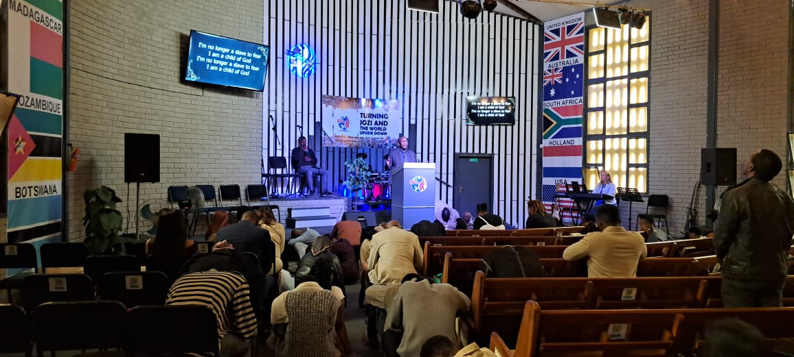
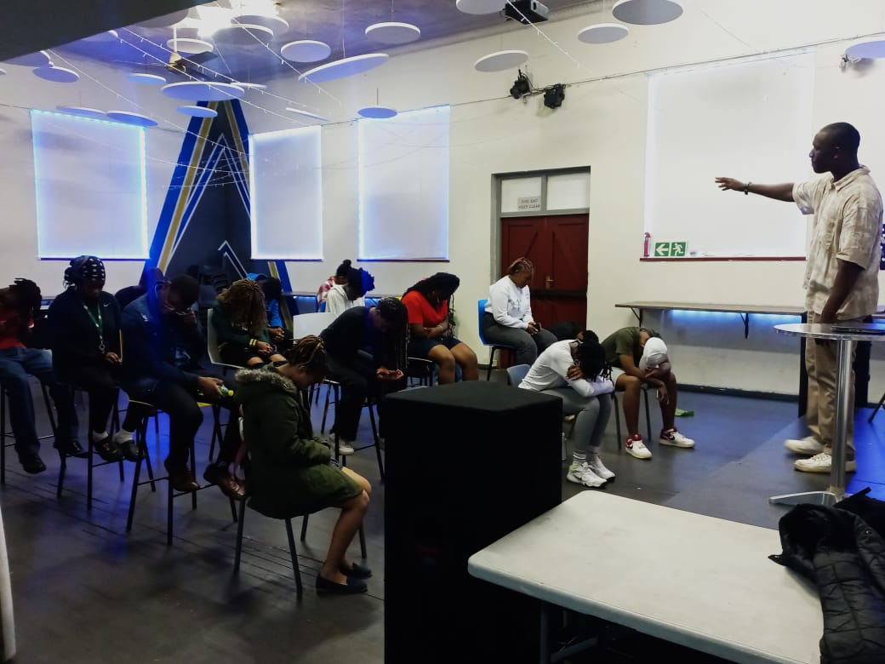
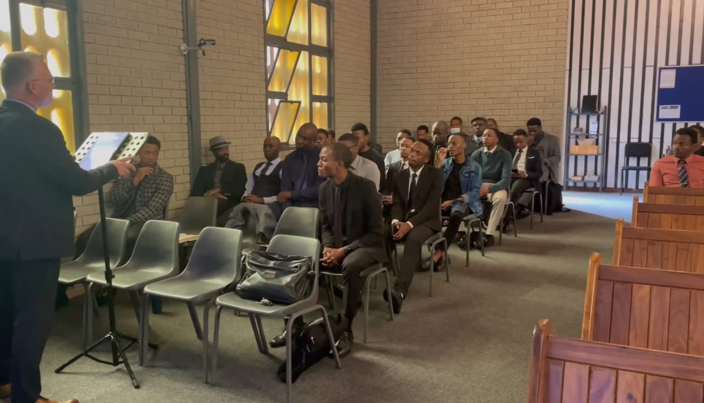
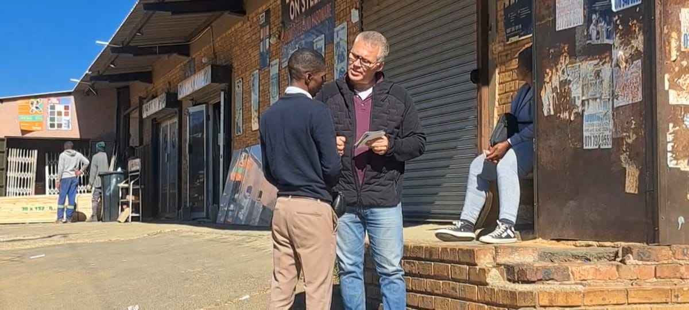

Our Services and Activities

We offer different opportunities for people to worship, learn about God's Word, develop their faith and connect with other believers.
Sunday Services
Morning service Time: 10:30am - 12:00pm
Evening service Time: 17:00pm - 18:00pm
Wednesday Service
Evening service Time: 19:00pm - 20:00pm
Join us for worship, prayer, biblical teaching and fellowship.
Bible Study

Sunday morning Time: 09:00am - 10:00am
Bible study provides an opportunity to engage in Scripture, to ask multiple questions and grow in understanding of the word of God. It is lead by the Pastor.
Discipleship - New Believer Class

Sunday Afternoon Time: 15:30pm - 17:00pm
Our discipleship programme helps believers grow spiritually and learn how to live according to the teachings of Jesus Christ.
Youth Night
.JPG)
Friday Evening Time: 19:00am - 22:00pm
This is when the youth gathers, play games togther, fellowship and get to know one another, outreach, make friends and discuss the Bible.
Outreach

Saturday Time: 15:30pm - 16:30pm
The church participates in outreach activities that is aimed to tell sinners and those who are lost about the love of Jesus, about repentance and salvation, to share the Gospel and to invit people to church.
Join Us And See God Move